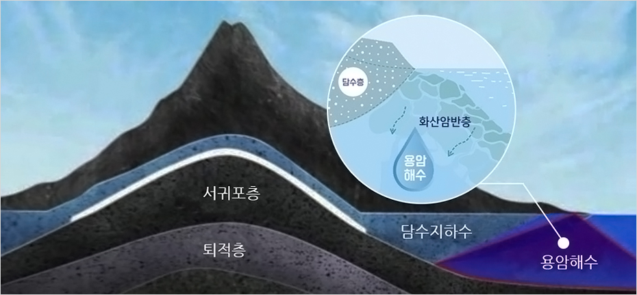

(특화단지) 용암해수단지
- Home
- 투자환경
- 투자입지
- (특화단지) 용암해수단지
제주용암해수단지 (Lava Seawater Industrial Complex)
단지구성
-
1용암해수센터
- 인프라지원, 산학협력 네트워크 구축, 기술개발 및 홍보ㆍ마케팅 지원
-
2교육연구 및 전시시설
- 용암해수 및 활용제품에 대한 홍보 및 전시, 판매, 교육공간
-
3스파시설(딸라소테라피)
- 해양요법을 시행할 수 있는 치료 및 휴양시설로서 관광산업과 연계
-
4음료 제조업
- 용암해수를 활용하여 먹는 염지하수 및 기능성 음료 생산
-
5식료품 제조업
- 용암해수를 활용한 식료품 생산 (염건품, 기능성 식품 등)
-
6향장품 및 기능성 제품 제조업
- 용암해수를 활용한 향장품 및 기능성제품 생산
용암해수란?
태고의 제주 바다가 만들어 낸 맑고 깨끗한 물
용암해수는 미네랄과 영양염류가 매우 풍부할 뿐만 아니라 유기물 및 병원균이 거의 없는 제주만이 보유한 독특한 지하수자원입니다. 제주섬의 탄생과 용암해수의 생성
용암해수는?
바닷물이 화산암반층에 의해 자연여과되어 육지의 지하로 스며든 물로서 미네랄과 영양염류가 매우 풍부할뿐만 아니라 유기물 및 병원균 등이 거의없는 제주만이 보유한 지하수자원입니다.



용암해수와 해양심층수
해양심층수는 수심 200미터 이상의 깊은 해저에서 취수하기 때문에 취수배관 설치 및 관리비용이 높습니다.
반면, 용암해수는 육지부에서 취수하므로 비교적 적은 비용으로 개발이 가능하며, 화산암반층에서 유래되는 미네랄 성분을 다양한 분야에 활용할 수 있습니다.
반면, 용암해수는 육지부에서 취수하므로 비교적 적은 비용으로 개발이 가능하며, 화산암반층에서 유래되는 미네랄 성분을 다양한 분야에 활용할 수 있습니다.

용암해수의 생성 & 분포
제주 동부지역은 바닷물의 투과가 좋은 화산암반층이 분포하고 있어 용암해수는 주로 제주 동부지역에 대량으로 매장되어 있습니다.
산업적 활용
용암해수를 활용한 제주형 창조산업 육성
천연의 칼슘, 마그네슘 등의 유용한 미네랄이 함유되어 있는 용암해수는 기능성 음료와 화장품 등 다양한 제품군의 고부가치화를 도모할 수 있습니다.-
음료
- 먹는 염지하수, 기능성음료
- 지역특산품과 연계한 혼합음료
- 미네랄을 원료로 한 이온음료
-
화장품
- 피부재생/기능성 로션, 크림, 젤
- 입욕제 및 스파용 제품
- 세정제(비누, 샴푸 등)
-
식품
- 칼슘, 마그네슘 보충제 등 기능성 식품
- 두부, 요구르트 등 발효음료
- 탈염수/농축수를 이용한 식품소스
- 주류(전통주, 소주, 맥주)
-
원료
- 관광산업 및 체험교육
- 친환경 과수 및 채소 재배
- 고부가가치 해양생물 배양
단지 입주 문의
- 주소 : 제주특별자치도 제주시 구좌읍 한동리 2972-1번지 일원
- 대표번호 : 064-720-3092
- 팩스 : 064-784-1715
- 홈페이지 : http://www.jejulavawater.com